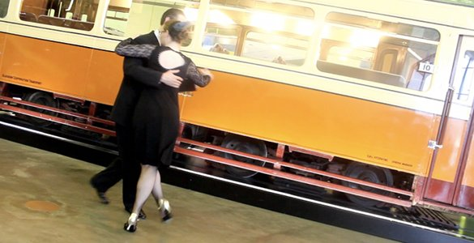
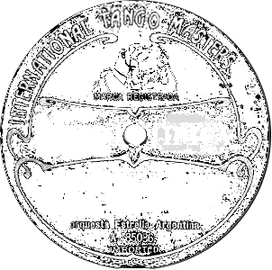

About us
About us
Catherine Daniela Dogaer and Wim Taghon started dancing the Authentic Argentinian Tango in Flanders in 1996. From early on in their dance career they were immersed in the authentic style of the old Argentinian maestros of the 1940s Golden Age: Pepito & Suzuki Avellaneda, Antonio Todaro, Juan Carlos Copes, Gerardo & Martha Portalea, Ricardo Vidort.
They have had many years of training by influential, world-class teachers such as Oliver Koch & Marisa Van Andel, Recuerdo, Claudia Codega & Esteban Moreno, Lalo & Mirta Diaz, Suzuki Avellaneda, Mingo & Esther Pugliese.
In Brussels, Catherine & Wim were extremely fortunate to experience many magical afternoons and evenings of dancing to one of the last Orquesta Tipicas, led by Alfredo Marcucci (Buenos Aires, 1930) who played in the Orquestra Tipica of Carlos di Sarli.
In 2004 they founded Tango Tipica in Glasgow, the only Tango school in Scotland to teach and perform the authentic 1940s style. Catherine & Wim's classes, for Absolute Beginners through to Advanced and Masters, have been extremely popular and in 2014 Tango Tipica is celebrating its 10th anniversary.
With their performances, Catherine Daniela Dogaer and Wim Taghon are renowned for combining stylistic precision with musical interpretation and for keeping the authentic tradition alive. Their classical performances exude the elegance and intimacy of a bygone era.
Tango Tipica: Argentinian Tango in Glasgow  Last verified: 6 April 2014
Last verified: 6 April 2014
 About us
About us